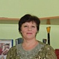
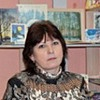

Дошкольное отделение школы № 854
Подробное описание Школы № 854 — в соответствующем разделе.
- Зеленоград, к603Б
- Зеленоград, к711
- Зеленоград, к618А
Воспитатели
Воспитатели, которых чаще всего благодарят родители (отзывы и профили сотрудников взяты с официального сайта школы):
 Воспитатель
Головинская Ирина Николаевна
Воспитатель
Головинская Ирина Николаевна
8 благодарностей |
Воспитатель
Дворцова Светлана Николаевна
8 благодарностей |
Воспитатель
Экзархо Марина Григорьевна
6 благодарностей |
Логопед
Хвостова Екатерина Александровна
3 благодарности |
|
Воспитатель
Шкулева Анастасия Андреевна
3 благодарности |
Воспитатель
Прохорова Наталья Анатольевна
2 благодарности |
Муз. рук.
Романова Наталья Юрьевна
2 благодарности |

Воспитатель
Крицкая Татьяна Михайловна
1 благодарность |
|

Воспитатель
Алексеева Юлия Владимировна
1 благодарность |
Воспитатель
Савченко Марина Михайловна
1 благодарность |
Воспитатель
Аленина Анастасия Михайловна
1 благодарность |
Воспитатель
Леоненко Ольга Анатольевна
1 благодарность |
|
Воспитатель
Пластинина Ирина Владимировна
1 благодарность |
Воспитатель
Соловьева Татьяна Владимировна
1 благодарность |
Отзывы
Данные собраны c официального сайта школы и через форму для отзывов.
Хочу выразить благодарность воспитателям детского сада ГБОУ школа 854(корп 603б) Крицкой Татьяне Михайловне,Савченко Марине Михайловне, Ширяевой Надежде Алексеевне,Алексеевой Юлии Владимировне.,музыкальному руководителю Романовой Наталье Юрьевне и учителю-логопеду Хвостовой Екатерине Александровне. Потому что, дети с радостью бегут в детский сад, они любят это место и все это благодаря чуткому отношению и вниманию к каждому ребенку. Хотелось бы отметить неоценимую работу, проделанную ими, за труд, который требует огромного терпения. Изо дня в день они дарят нашим детям свою заботу, ласку и любовь. Нам очень повезло с воспитателями! Мы желаем, чтобы таких воспитателей всегда ценили как человека и преподавателя!
Выражаю признательность за профессиональную работу воспитателям Шкулевой Анастасии Андреевне и Соловьевой Татьяне Владимировне.
В группе всегда чисто, занятия с детьми проводятся ежедневно и добросовестно. Детям уделяется много внимания. После прогулок детская одежда высушена.
Воспитатели отдают много сил и времени на подготовку к тематическим праздникам. Новогодний спектакль оказался очень интересным и красочным. Дети с удовольствием участвовали в представлении, а после праздника осталась масса впечатлений.
Прошу по достоинству оценить работу Шкулевой Анастасии Андреевны и Слоловьевой Татьяны Владимировны.
В группе всегда чисто, занятия с детьми проводятся ежедневно и добросовестно. Детям уделяется много внимания. После прогулок детская одежда высушена.
Воспитатели отдают много сил и времени на подготовку к тематическим праздникам. Новогодний спектакль оказался очень интересным и красочным. Дети с удовольствием участвовали в представлении, а после праздника осталась масса впечатлений.
Прошу по достоинству оценить работу Шкулевой Анастасии Андреевны и Слоловьевой Татьяны Владимировны.
Благодарственное письмо!
Мы, родители группы № 1-2 «Солнышко» детского сада ГБОУ Школа № 854 корпус 618А, от всей души выражаем слова благодарности нашим воспитателям: Прохоровой Наталье Анатольевне, Север Татьяне Викторовне и помощнику воспитателя – Аликберовой Замине.
Спасибо Вам за ваш труд – требующий большого количества терпения, за любовь – которую Вы дарите нашим детям, за заботу и ласку, за уютную атмосферу в группе.
Спасибо, что каждое утро Вы встречаете наших детей с улыбкой и хорошим настроением.
Спасибо, что Вы всегда находите время поговорить с каждым из родителей, рассказать, как проводит его ребенок день в садике, как он себя ведет, и на что обратить внимание.
Спасибо, что Вы проводите с детьми интересные занятия – рисуете, лепите из пластилина фигурки, делаете различные аппликации, которые дети потом с удовольствием нам демонстрируют, играете в увлекательные игры, читаете интересные сказки, учите стихотворения.
Спасибо, что под Вашим присмотром наши дети приобретают свои первые взрослые навыки самостоятельности - одеваться, умываться, заправлять кровать, убирать со стола посуду после обеда и так далее.
Мы очень Вам благодарны за всю проделанную работу!
Желаем Вам отличного здоровья, сил, терпения и всегда прекрасного настроения!
Мы, родители группы № 1-2 «Солнышко» детского сада ГБОУ Школа № 854 корпус 618А, от всей души выражаем слова благодарности нашим воспитателям: Прохоровой Наталье Анатольевне, Север Татьяне Викторовне и помощнику воспитателя – Аликберовой Замине.
Спасибо Вам за ваш труд – требующий большого количества терпения, за любовь – которую Вы дарите нашим детям, за заботу и ласку, за уютную атмосферу в группе.
Спасибо, что каждое утро Вы встречаете наших детей с улыбкой и хорошим настроением.
Спасибо, что Вы всегда находите время поговорить с каждым из родителей, рассказать, как проводит его ребенок день в садике, как он себя ведет, и на что обратить внимание.
Спасибо, что Вы проводите с детьми интересные занятия – рисуете, лепите из пластилина фигурки, делаете различные аппликации, которые дети потом с удовольствием нам демонстрируют, играете в увлекательные игры, читаете интересные сказки, учите стихотворения.
Спасибо, что под Вашим присмотром наши дети приобретают свои первые взрослые навыки самостоятельности - одеваться, умываться, заправлять кровать, убирать со стола посуду после обеда и так далее.
Мы очень Вам благодарны за всю проделанную работу!
Желаем Вам отличного здоровья, сил, терпения и всегда прекрасного настроения!
Хочу выразить огромную благодарность воспитателю детского сада 2046 Головинской Ирине Николаевне и помощнику воспитателя Наталье Викторовне за их нелегкий самоотверженный труд.Благодаря Вам мой сын с большим удовольствием и интересом ходил в детский садик.Также хотелось поблагодарить музыкального руководителя Наталью Юрьевну и логопеда Екатерину Александровну.Их неравнодушное отношение и индивидуальный подход делают чудеса.Отдельное спасибо поварам детского садика от моего сына.Он всегда говорил,что в саду их очень вкусно кормят .Нелли Владимировна,спасибо Вам большое за Ваш нелегкий труд!Вы сумели объединить под одной крышей столько замечательных людей. Успеха вам и удачи во всем!!! Еще раз спасибо за все.
Большое спасибо Марине Григорьевне Экзархо, автору книги «фотоальбом семейные хроники», за оригинальность, интересное оформление и детские описания своих воевавших и победивших прадедов. Информация о маленьких помощниках, которые трудились в тылу и были награждены за помощь в победе над фашистами, не оставили равнодушными и сегодняшних детей. В наше мирное время современные дети чтят память и благодарят за подвиги воевавших. Каждый ребенок давший свои материалы для этой книги, с гордостью рассказывает о подвигах совершённых прадедушками, знают какими наградами они были награждены. С уважением отношусь к родителям детей, которые сохранили и передали эту память о предках своим детям. Прошло 70 лет, но никто не забыт и ничто не забыто, и маленькие правнуки, повзрослев, передадут историю своей семьи следующему поколению. Меня очень тронула эта книга. Огромное спасибо за проделанный труд!
Хотим сердечно поблагодарить воспитателя группы №3 дошкольного отделения (корпус 618А) школы № 854 Дворцову Светлану Николаевну. Наша группа выпускная. Ребенка водим в этот д/с с ясельной группы. Он всегда радостно шел в этот садик. Но особую признательность хочется выразить доброму творческому заботливому прирожденному педагогу Светлане Николаевне.
Детям комфортно находиться в доброжелательной теплой обстановке созданной этим воспитателем. Детей учат дружить, сопереживать, помогать друг другу справляться со своими слабыми сторонами. Светлану Николаевну очень любят дети. Они ее слушаются. Светлана Николаевна грамотно подбирает игрушки и развивающие материалы. Детям интересно ходить в сад.
Каждый день ее работы - это большой труд. Особо хочется отметить объем и разнообразие творческих занятий. С детьми Светлана Николаевна постоянно занимается, читает книги, просит отвечать на вопросы, задумываться. Каждый день новая тема для развития, которая закрепляется рисунком, лепкой или другими поделками. На стенде в холле группы вывешиваются работы наших детей, выставляются детские поделки. Дети получают необходимые знания и развитие, потом удивляют родителей дома своими способностями.
Между воспитателем и родителями нашей группы существует обратная связь, Светлана Николаевна рассказывают о талантах и интересах детей, которые необходимо развивать.
К любому празднику ведется тщательная подготовка. Все дети хорошо знают свои роли, они раскрепощены, уверены в себе.
Хотим отдельно поблагодарить Светлану Николаевну за хорошую подготовку наших детей к школе. Ведь это труд не одного дня, а ежедневная кропотливая работа по математике, русскому языку и развитию речи.
Наша семья считает Дворцову Светлану Николаевну воспитателем от Бога. Мы желаем, чтобы каждому ребенку посчастливилось иметь такого талантливого педагога. Низкий Вам поклон за наших детей.
Детям комфортно находиться в доброжелательной теплой обстановке созданной этим воспитателем. Детей учат дружить, сопереживать, помогать друг другу справляться со своими слабыми сторонами. Светлану Николаевну очень любят дети. Они ее слушаются. Светлана Николаевна грамотно подбирает игрушки и развивающие материалы. Детям интересно ходить в сад.
Каждый день ее работы - это большой труд. Особо хочется отметить объем и разнообразие творческих занятий. С детьми Светлана Николаевна постоянно занимается, читает книги, просит отвечать на вопросы, задумываться. Каждый день новая тема для развития, которая закрепляется рисунком, лепкой или другими поделками. На стенде в холле группы вывешиваются работы наших детей, выставляются детские поделки. Дети получают необходимые знания и развитие, потом удивляют родителей дома своими способностями.
Между воспитателем и родителями нашей группы существует обратная связь, Светлана Николаевна рассказывают о талантах и интересах детей, которые необходимо развивать.
К любому празднику ведется тщательная подготовка. Все дети хорошо знают свои роли, они раскрепощены, уверены в себе.
Хотим отдельно поблагодарить Светлану Николаевну за хорошую подготовку наших детей к школе. Ведь это труд не одного дня, а ежедневная кропотливая работа по математике, русскому языку и развитию речи.
Наша семья считает Дворцову Светлану Николаевну воспитателем от Бога. Мы желаем, чтобы каждому ребенку посчастливилось иметь такого талантливого педагога. Низкий Вам поклон за наших детей.
Коллектив родителей выражает свою искреннею благодарность воспитателям группы №6 ГБОУ Школа № 854 корпус 618 А Галлямовой Гульнаре Зофяровне, Пластининой Ирине Владимировне и помощнику воспитателя Раченковой Светлане Алексеевне. В группе царит атмосфера уюта, доброты и присутствия яркого творческого начала в оформлении будь-то доски объявлений или коридор, который всегда украшен экспозициями детских рисунков и поделок. Нас всегда встречают улыбкой и мы оставляем своих детей в саду со спокойным сердцем, так как уверены в том, что они будут вовремя накормлены, присмотрены и что самое главное обучены и правильно воспитаны. Низкий поклон воспитателям и помощнику воспитателя нашей группы и пожелания дальнейших творческих успехов в нелегком труде воспитания подрастающего поколения детей.
Мой ребенок посещает дошкольное отделение 2046(школы 854) Зеленоградского Округа г. Москвы. Как мама, хочу выразить огромную благодарность педагогу-логопеду Хвостовой Екатерине Александровне. Мой малыш посещает её занятия второй год и благодаря высокому профессионализму, опыту и индивидуальному подходу, мы добились потрясающих результатов (год назад мой ребенок не разговаривал, а сейчас уже рассказывает стихи)! Её занятия всегда разные, интересные, сын с огромным удовольствием их посещает. Педагог использует прекрасные методические материалы, благодаря которым мы легко и с интересом выполняем новые задания. Также хочу отметить прекрасно оборудованный кабинет, в котором проходят занятия. Кроме этого я очень благодарна воспитателям 1 группы, в которую ходит мой ребенок, – Ольге Анатольевне и Анастасии Михайловне! Это педагоги, как говорится "с большой буквы"!!!Они очень внимательны и терпеливы не только к детям, но и к родителям, - всегда все подробно расскажут, объяснят и дадут совет относительно воспитания ребенка, учитывая его характер, возраст. Считаю,их большой заслугой то, что ВСЕ ребята любят ходить в садик! В их группе много рисуют, лепят и пр. – словом, видно, что с детьми занимаются, и занятия им очень нравятся. Также спасибо няне Галине за ее нелегкий физический труд, терпение и любовь к детям. Я также благодарна муз. руководителю за прекрасные утренники. И мед. сестре Доменике Михайловне – она всегда приветлива и внимательна к детям, знает по именам не только всех малышей сада, но и их родителей! Также приятно, что заходя на территорию садика, видна работа дворников - всегда убранные дорожки, ухоженные кустарники и цветы. Спасибо заведующей Нелле Владимировне за слаженную работу всего коллектива! И желаю новых успехов в Новом Году!!!
Если вы нашли ошибку или неточность, пожалуйста, сообщите нам об этом.
Ученик, выпускник или родитель? Оставьте отзыв о детском саде.